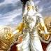
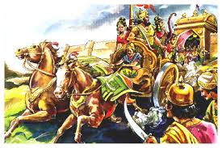

revision

"Hello everyone this is our second page on the epic Mahabharata. On this we will understand some intersting and unknown facts about 'GANGAPUTRA BHEESHMA'."
we all know the story of gangaputra bheeshma.if you don't know it you can go on wikipedia and find it."LETS GO"
The real name of Gangaputra bheeshma was devrata.he was the eighth son of river goddess Ganga.Gangaputra devrata was a godly and great warrior.At his young no one was there who can can defeat or kill him.As we know from the last page of king Shantanu that he had got a blessing of wish and die(ICHAMRITYU).
names of Gangaputra bheeshma
some more names of Gangaputra:
Devavrata (देवव्रत) - one who is devoted to Gods
Gangaputra (गंगापुत्र) – son of Ganga
Shantanava (शान्तनव) –son of Shantanu
Gauranga (गौरांग) – the one with fair body
Shvetaveera (श्वेतवीर) – a white warrior or the one who is heroic white
Ashta Vasu (अष्ट वसु) – elemental gods (in previous life)
Bharatavanshi (भरतवंशी) - descendant of Bharata
Pitamaha (पितामह)- Grandfather (also known as Bhishma Pitamaha; called by Pandavas and Kauravas
the swayamwar

In the process of finding bride for his half-brother the young king Vichitravirya gangaputra knew that the princesses of kashi were of his age and between hastinapur and kashi there was a tradition that if any princess is born in kashi she will marry with the hastinapur's king or prince.But the kashi king didn't obey the tradition and he organized the swayamwar ceremony of those princesses and called all the king of India except the king of hastinapur.After gangaputra hears this news he directly taking his Bow and Arrows and went in the kashi sabha.There he abducts the three princess Amba,Ambalika and Ambika from the sabha of kashi.Shalva, the ruler of Saubala, and Amba (the eldest princess) were in love; Shalva attempted to stop the abduction but was soundly beaten. Upon reaching Hastinapura, Amba confided Bheeshma that she wished to wed shalva.Bheeshma then sent Amba to shalva but he refuses her saying that when we lost a thing in war we cannot accept it back.she then came back to bheeshma saying that accordding to his kshatriya dharam he should accept her now but bheshma donot accept her due to his pratigya.Amba then sorrowfully,went to some some sages out of city. She then explains everything to them. They made her meet with godly sage Parshurama. Hearing the words of the princess,Parshurama asked her motive.
Bheeshma sought refuse with Parshurama, who ordered Bheeshma to marry Amba, telling Bheeshma it was his duty. Bheeshma politely refused, saying that he was ready to give up his life at the command of his teacher but not the pratigya that he had made to satyawati and shantanu. Both mocks each other and upon the refusal, Parshurama called him for a fight at Kurukshetra. At the battlegrounds, while Bheeshma was on a chariot, Parshurama was on foot. Bheeshma requested Parshurama to also take a chariot and armour so that Bheeshma would not have an unfair advantage. Parshurama blessed Bheeshma with the power of divine vision and asked him to look again. When Bheeshma looked at his guru with the divine eyesight, he saw the Earth as Parshurama's chariot, the four Vedas as the horses, the Upanishads as the reins, Vayu (wind) as the Charioteer and the Vedic goddesses Gayatri, Savitri, and Saraswati as his armour. Bheeshma got down from the chariot and sought the blessings of Parshurama to protect his dharma, along with permission to battle against his teacher. Pleased, Parshurama blessed him and advised him to protect his vow as Parshurama himself had to fight to uphold his word as given to Amba. Bheeshma attempted to use the Prashwapastra against Parshurama. This weapon was not known to Parshurama and noone on the earth except bheeshma. Before Bheeshma could release it, a voice from the sky(AKASHWANI) warned him that "if he uses this weapon it would be a great insult towards his Guru." Pitrs then appeared and obstructed the chariot of Parshurama, forbidding him from fighting any longer. At the behest of the divine sage Narada and the gods, Parshurama ended the conflict and the battle was declared bheeshma's winning.(effect of any astra on parshurama is not clear as he is avatara of Lord Vishnu and chiranjivi).
If you want to know more about amba click the button of shikhandi and know more about Amba.